Введение в Rave
Панель компонент Rave
Имеются два типа объектов в Rave, компоненты вывода (Output Components) и классы отчета (Report Classes). Компоненты вывода отвечают за вывод отчета на различные устройства вывода, а классы отчета, которые не являются компонентными классами, отвечают за все остальные задачи.
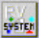 TrvSystem Включает в себя стандартный принтер и предварительный просмотр и является одним из самых простых в использовании компонент.
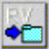 TRvNDRWriter Создает NDR поток или файл (в должном формате) при выполнении отчета.
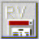 TrvRenderPreview Показывает диалог предварительного просмотра для NDR потока или файла.
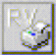 TrvRenderPrinter Посылает NDR поток или файл на принтер.
TRvRenderPDF Преобразовывает NDR поток или файл в PDF формат.
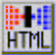 TRvRenderHTML Преобразовывает NDR поток или файл в HTML формат.
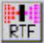 TRvRenderRTF Преобразовывает NDR поток или файл в RTF формат.
TRvRenderText Преобразовывает NDR поток или файл в Text формат.
Классы Rave
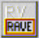 TrvProject Производит соединение к проекту отчета, который был создан с помощью визуального редактора Rave. Используйте данный компонент для получения списка всех доступных отчетов или для выполнения конкретного отчета.
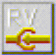 TrvCustomConnection Подсоединяет пользовательские данные (сгенерированные через события) к DirectDataViews, созданные с помощью визуального редактора Rave.
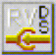 TrvDataSetConnection Подсоединяет TDataSet данные (например, TClientDataSet, или компоненты третьих сторон, наследники от TDataSet) к DirectDataViews, созданные с помощью визуального редактора Rave.
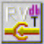 TrvTableConnection Подсоединяет TTable компоненты к DirectDataViews, созданные с помощью визуального редактора Rave.
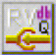 TrvQueryConnection Подсоединяет TQuery компоненты к DirectDataViews, созданные с помощью визуального редактора Rave.